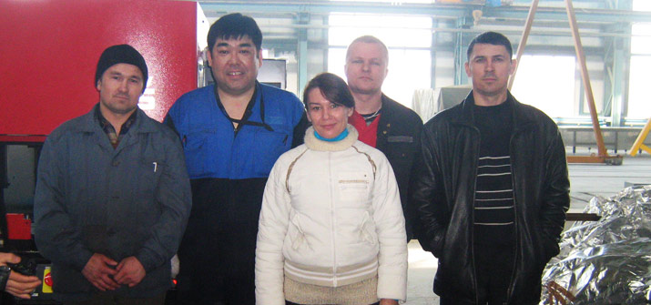
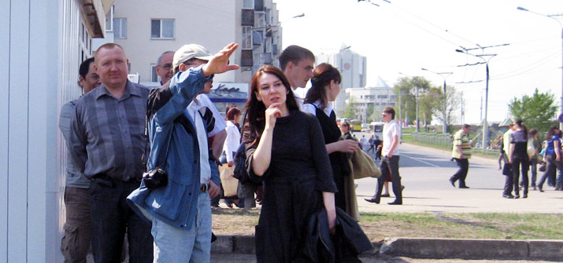
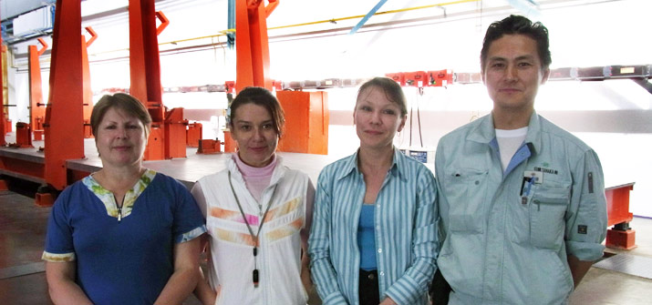

переводчик, фрилансер




ИнформацияОпыт переводческой работы: с 1991 – по настоящий момент. Разная тематика письменных переводов. Последовательный устный перевод на коммерческих и технических переговорах, презентациях с участием топ-менеджеров компаний. +7 917 650 40 17
|
Услуги
Тематика: юридическая тема (контракты, финансовые и банковские документы), технические переводы по текстильному, нефтегазовому оборудованию, машиностроению, строительству, компьютерная техника и т.д. |
Примеры работ
- Рекомендации по настройке комплекса программ EKRASMS (русский/английский)
- 110/10-6кВ - 25MВA Мобильная подстанция (русский/английский)
- Договор поручительства (русский/английский)
- Основы сравнительного анализа показателей (русский/английский)
- Анализа эксплуатационных характеристик и опасных факторов (русский/английский)